I'm a Ph.D student of Yonsei university, department of computational science and engineering. I'm an AI developer and researcher of Computational Methods in Medical Engineering (CMME) Lab. My research interests lie at the intersection of scientific machine learning, computational science, and physics-based AI, with a focus on developing intelligent models to simulate, predict, and understand complex physical phenomena.
Research Interests
Transcranial Focused Ultrasound
Low-intensity transcranial focused ultrasound (LIFU) is an emerging noninvasive technique for precisely modulating targets within the brain. Its major challenge is skull-induced attenuation and aberration, which distort the acoustic focus. To address this, we develop AI-accelerated simulation methods and patient-specific acoustic holographic lenses for accurate and efficient treatment planning.
Physics-Guided AI
High-fidelity numerical solvers accurately model physical phenomena, but their computational cost limits real-time applications. Physics-guided AI combines simulation data with physical knowledge to learn fast and reliable mappings between treatment conditions and resulting fields. Our work explores surrogate modeling, super-resolution networks, and neural operators across acoustic, thermal, and mechanical problems.
Digital Twins
Medical digital twins provide virtual representations of patients and treatments that can be updated as conditions change. Their practical use requires models that integrate patient anatomy, treatment parameters, and physical processes while producing predictions in real time. We develop simulation-driven digital twins for personalized treatment planning and monitoring, with a particular focus on transcranial focused ultrasound.
Medical AI
Medical AI can extract clinically relevant information from complex imaging and physiological data. However, purely data-driven models may overlook the physical mechanisms that govern treatment response. We combine multimodal learning from CT and MR images, tissue segmentation, and physics-based prediction to support safer and more personalized therapies.
Outside the Lab
Rock music and festivals. Pokémon. Contemporary art. And a good highball!
Resume
Education
Yonsei University
Mar 2023 — Present
Integrated M.S./Ph.D., Compuational Science and Engineering
Ewha Womans University
Mar 2019 — Feb 2023
B.S., Division of Mechanical and Biomedical Engineering
(Minor: Computer Science and Engineering)
Research experiences
Computational Methods in Medical Engineering Lab
Mar 2023 — Present
Researcher (Advisor: Prof. Kyungho Yoon)
Deep learning-based forward simulation
Neuromodulation and Tissue Engineering Lab
Jan 2024
Visiting Scholar (Advisor: Prof. Seung-Schik Yoo)
Forward simulation of tFUS using FDTD and PSTD
Computational Methods in Medical Engineering Lab
Jun 2022 — Feb 2023
Undergraduate Researcher (Advisor: Prof. Kyungho Yoon)
Deep learning-based inverse simulation
Medical Imaging & Learning Lab
Jan 2021 — Dec 2021
Undergraduate Researcher (Advisor: Prof. Taehoon Shin)
Deep learning-based body tissue segmentation
Honors & Awards
Runner-up Best Paper Award in MICCAI 2025 Workshop on DT4H, 2025.
2025 KSME Bioengineering Division Best Paper Awards, 2025.
27th Yonsei CSE Poster Exhibition, Award of Excellence (The 1st Prize), 2025.
22th Yonsei CSE Poster Exhibition, Award of Excellence, 2023.
2022 KSES Energy Data and AI Utilization Idea Contest, Award of Encouragement, 2022.
Skills
Python
80%
MATLAB
70%
C/C++
40%
CUDA
20%
Publications
Journal
1. M. Seo, H. You, M. Seol, SS. Yoo, S. Lee, K. Yoon, Optimization of acoustic lens design for transcranial holographic ultrasound using an active learning-based genetic algorithm, Journal of Computational Design and Engineering, 2026;13:1-20.
2. M. Seol, M. Seo, M. Shin, SS. Yoo, K. Yoon, Deep learning based real-time phase-amplitude correction for phased array transducers in transcranial focused ultrasound, Journal of Computational Design and Engineering, 2026;13:95-115.
3. M. Seo, K. Yoon, Deep Learning-based Denoising of Monte Carlo Simulation for Laser-Tissue Interaction Modeling, Transactions of the Korean Society of Mechanical Engineers B, 2026;50:191-201.
4. M. Shin, M. Seo, H. Choi, J. Jung, K. Yoon, Local stress fields prediction using global displacement through Fourier Neural Operators, Journal of Computational Design and Engineering, 2025;12:21-40.
5. M. Seo, M. Shin, G. Noh, SS. Yoo, K. Yoon, Multi-modal networks for real-time monitoring of intracranial acoustic field during transcranial focused ultrasound therapy, Computer Methods and Programs in Biomedicine, 2024;257:108458.
6. M. Shin, M. Seo, S. Cho, J. Park, JH. Kwon, D. Lee, K. Yoon, PhysRFANet: Physics-guided neural network for real-time prediction of thermal effect during radiofrequency ablation treatment, Engineering Applications of Artificial Intelligence, 2024;138:109349.
7. M. Shin, M. Seo, SS. Yoo, K. Yoon, tFUSFormer: Physics-guided super-resolution Transformer for simulation of transcranial focused ultrasound propagation, IEEE Journal of Biomedical and Health Informatics, 2024;28:4024-4035.
8. M. Shin, M. Seo, K. Lee, K. Yoon, Super-resolution techniques for biomedical applications and challenges, Biomedical Engineering Letters, 2024;14:465-496.
Conference Presentations
1. H. Ghafoor, M. Seo, S. Cho, K. Yang, J. Lee, K. Yoon, SMILE: A Structured Multi-Agent Clinical Reasoning for Liver Ultrasound Understanding, Winter Conference on Applications of Computer Vision, Accepted, 2027.
2. M. Seo, H. Ghafoor, M. Seol, S. Cho, K. Yoon, tFUSOperator: Operator Learning for Transcranial Focused Ultrasound Digital Twins, 2nd Digital Twin for Healthcare Workshop at MICCAI, Lecture Notes in Computer Science (LNCS) 72575, 2026.
3. S Cho, M. Seo, M Seol, J Park, JH Kwon, K Yoon, Few-shot Deep Learning for Phase-Amplitude Aberration Correction in Transcranial Focused Ultrasound, 2nd Digital Twin for Healthcare Workshop at MICCAI, Lecture Notes in Computer Science (LNCS) 17275, 2026.
4. M Seol, M. Seo, S Cho, K Yoon, Few-shot Deep Learning for Phase-Amplitude Aberration Correction in Transcranial Focused Ultrasound, 2nd Digital Twin for Healthcare Workshop at MICCAI, Lecture Notes in Computer Science (LNCS) 17275, 2026.
5. M. Seo, M. Shin, G. Noh, SS. Yoo, K. Yoon, Acoustic Simulation with Deep Learning for Low-intensity Transcranial Focused Ultrasound Digital Twins, Digital Twin for Healthcare Workshop at MICCAI, Lecture Notes in Computer Science (LNCS), 2025, 58-68.
6. S. Cho, M. Seo, M. Shin, K. Yoon, Towards Digital Twin of RF Ablation: Real-Time Prediction of Time-Dependent Thermal Effects Using Transformer, Digital Twin for Healthcare Workshop at MICCAI, Lecture Notes in Computer Science (LNCS), 2025, 69-78.
7. M. Seo, M. Shin, G. Noh, SS. Yoo, K. Yoon, Multi-modal deep learning for real-time monitoring of intracranial acoustic field in transcranial focused ultrasound, International Society for Therapeutic Ultrasound, 2025.
8. M. Seo, K. Yoon, Deep Learning-based Denoising of Monte Carlo Simulation for Laser-Tissue Interaction Modeling, Korean Society of Mechanical Engineers Bioengineering Division, 2025.
9. M. Seo, S. Lee, K. Yoon, Deep Learning-based Lens Design Method for Transcranial Holographic Ultrasound, Korean Society of Mechanical Engineers Annual Meeting, 2025.
10. M. Seo, M. Shin, G. Noh, K. Yoon, Real-Time Simulation of tFUS using Multimodal Swin Transformer, Korean Institute of Communications and Information Sciences Summer conference, 2024.
11. M. Seo, M. Shin, G. Noh, K. Yoon, Multi-modal Generative Adversarial Network for transcranial focused ultrasound simulation, Korean Institute of Communications and Information Sciences Fall conference, 2023.
12. M. Seo, M. Shin, K. Yoon, Real-time pressure field monitoring of transcranial focused ultrasound using Generative Adversarial Network, Korean Society of Mechanical Engineers Bioengineering Division, 2023.
13. M. Seo, K. Yoon, Generative Adversarial Network-based real-time pressure field monitoring of transcranial focused ultasound, Annual Meeting of the Korean Society for Industrial and Applied Mathematics, 2022.
14. M. Seo, K. Yoon, Thermal energy digital twin model for building performance monitoring, Korean Solar Energy Society Autumn Annual Conference, 2022.
Portfolio
Selected research in computational medicine, acoustic simulation, and AI. Personal thoughts and reflections on each project are shared in the Personal reflections section of each article.
2024 · Surrogate modeling · Deep learning · Multimodal learning
Deep learning based real-time intracranial acoustic field simulation for transcranial focused ultrasound
Predicting intracranial pressure fields from acoustic free-field pressure maps, anatomical images and transducer configurations. The work was published in Computer Methods and Programs in Biomedicine in 2024.
Read article ↗
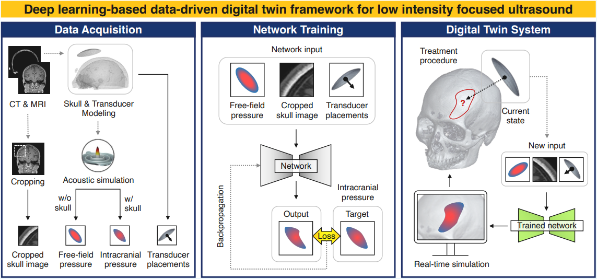
Introduction
Transcranial focused ultrasound (tFUS) is a promising non-invasive therapeutic technology that delivers concentrated acoustic energy to targeted regions of the brain. It has demonstrated clinical potential for treating neurological disorders, including Parkinson's disease and essential tremor, and has also emerged as a promising modality for non-invasive neuromodulation.
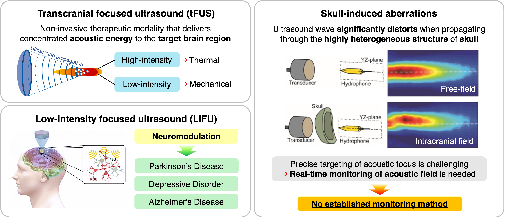
Problem definition
A major challenge in tFUS is the distortion of ultrasound waves as they propagate through the skull. Due to the heterogeneous acoustic properties of skull tissues, the transmitted waves undergo refraction, attenuation, and phase aberration, potentially shifting the acoustic focus away from the intended target. Therefore, real-time monitoring of the intracranial acoustic pressure field is essential for ensuring accurate and safe treatment.
Conventional numerical simulations can accurately estimate intracranial acoustic fields by incorporating patient-specific skull geometries and acoustic properties derived from computed tomography (CT). However, their high computational cost makes them impractical for real-time applications.
Methodology
To overcome this limitation, we developed multi-modal deep learning surrogate models capable of predicting intracranial acoustic pressure fields in real time. Our approach integrates three complementary input modalities:
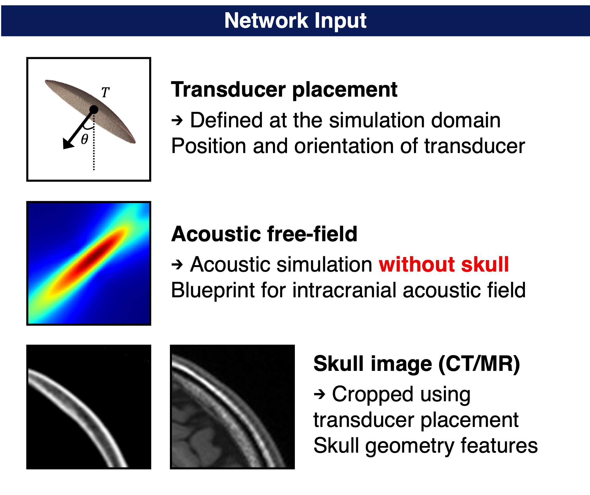
Acoustic free-field: The pressure field generated by ultrasound propagation in a homogeneous medium without the skull. It provides the baseline spatial distribution of acoustic energy before skull-induced distortion.
Skull images (CT/MR): Anatomical information that enables the network to learn how skull structures influence acoustic wave propagation and distort the pressure field.
Transducer placement: A six-dimensional vector describing the position and orientation of the ultrasound transducer, providing additional spatial information about the sonication configuration.
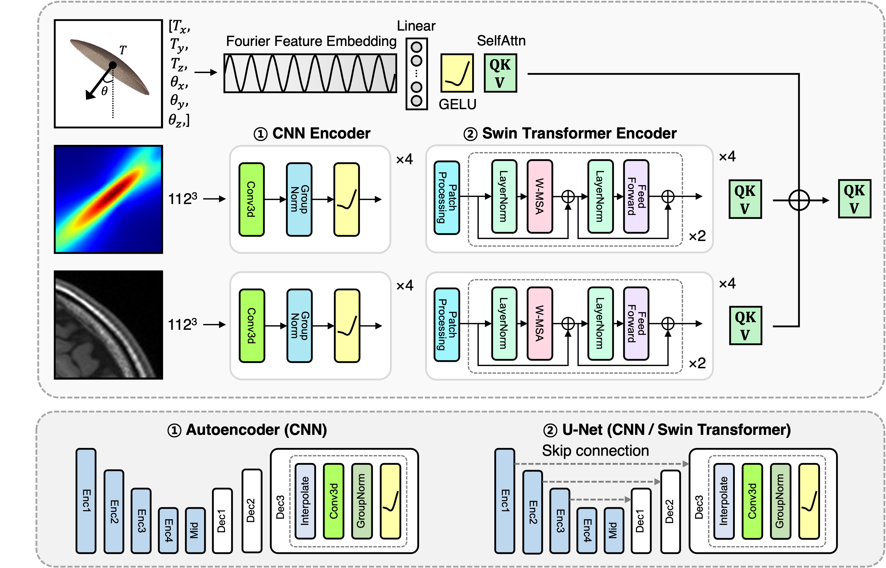
We investigated three network architectures: a 3D CNN-based Autoencoder (AE), a 3D CNN-based U-Net, and a Swin Transformer-based U-Net. Each model employs a multi-modal encoder to extract and integrate features from the different inputs, followed by a decoder that reconstructs the three-dimensional intracranial acoustic pressure field.
For training and evaluation, we constructed a simulation dataset using CT and MR images from 11 human subjects. Reference intracranial pressure fields were generated using the k-space numerical simulation method, allowing the networks to learn the relationship between transducer configurations, skull anatomy, and acoustic wave propagation.
Results
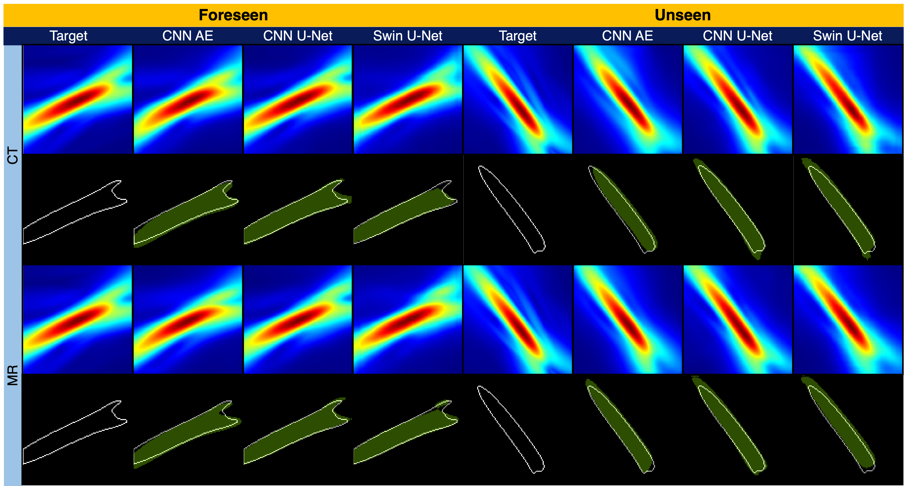
The proposed networks demonstrated accurate prediction of intracranial acoustic fields with substantially reduced computational time. Among the evaluated architectures, the CNN-based U-Net achieved the best overall performance, reaching a focal-region Dice score of approximately 94% on seen skull anatomies and 89% on unseen skull anatomies using CT inputs. The models also demonstrated the feasibility of predicting intracranial acoustic fields from MR images, suggesting the potential for CT-free applications.
Using CT images, the CNN U-Net achieved a focal-region Dice score of 93.73% on seen skulls and 88.64% on unseen skulls, with focal peak localization errors of 1.36 mm and 1.90 mm, respectively. The corresponding peak pressure amplitude errors were 0.71% and 5.29%.
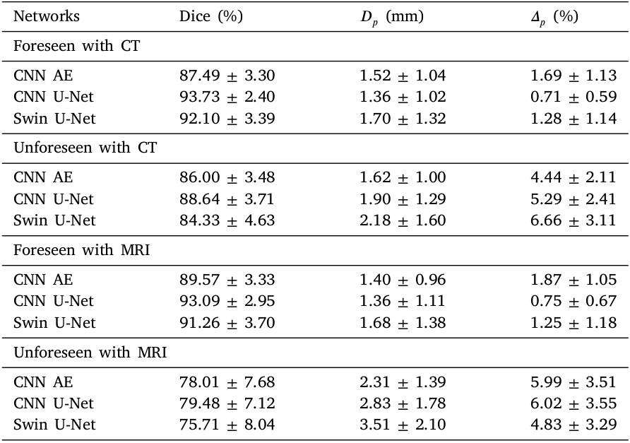
Remarkably, the networks also demonstrated promising performance using only MR images. The CNN U-Net achieved Dice scores of 93.09% on seen skulls and 79.48% on unseen skulls, with localization errors of 1.36 mm and 2.83 mm and peak pressure amplitude errors of 0.75% and 6.02%, respectively. Furthermore, pretraining the network on CT images followed by fine-tuning on MR images improved the unseen-skull Dice score to 82.60%, demonstrating the effectiveness of transfer learning for MR-based acoustic field prediction.
In terms of computational efficiency, the CNN-based U-Net achieved an inference time of approximately 2.3 milliseconds, compared to over 300 seconds required by conventional k-space simulations. Even the more computationally demanding Swin Transformer model completed predictions within approximately 23 milliseconds, demonstrating the feasibility of real-time acoustic field estimation.
Furthermore, our ablation study highlighted the importance of integrating anatomical information with the acoustic free-field. Incorporating skull images substantially improved prediction accuracy, confirming that multi-modal learning effectively captures skull-induced acoustic aberrations.
Conclusion
This research demonstrates the potential of multi-modal deep learning for real-time, patient-specific intracranial acoustic field prediction during tFUS therapy. By combining acoustic free-fields, skull images, and transducer placement information, our framework enables fast and accurate estimation of skull-induced acoustic distortions.
Beyond accelerating acoustic simulations, this approach provides a foundation for developing digital twins of tFUS therapy, where intracranial acoustic fields can be dynamically updated according to changes in transducer placement. Ultimately, such systems could support more precise, adaptive, and personalized ultrasound treatments.
Personal reflections
This project was my first major research endeavor after entering graduate school. Looking back, I believe the two most meaningful contributions of this work were introducing the acoustic free-field as a network input and demonstrating the feasibility of intracranial acoustic field prediction using MR images.
I consider the acoustic free-field to be a particularly effective input representation for deep learning-based ultrasound simulation. It inherently encodes essential transducer characteristics, including aperture diameter, radius of curvature, operating frequency, and beam orientation. Since the free-field remains identical for a given transducer configuration in its local coordinate system, a reference pressure map can be precomputed and simply rotated according to the transducer orientation. This enables efficient, real-time input generation without repeatedly performing numerical simulations. In my view, this makes the acoustic free-field an especially powerful representation for learning ultrasound propagation.
Another exciting finding was that MR-based prediction could achieve reasonably high accuracy without requiring CT images as network inputs. While CT provides explicit information about skull anatomy and acoustic properties, acquiring high-resolution CT scans can be challenging due to radiation exposure concerns. This may also become a practical obstacle when translating the framework into clinical software or medical devices. To the best of our knowledge, this study was the first to demonstrate deep learning-based intracranial acoustic field prediction using MR images alone.
Nevertheless, the performance degradation observed on unseen skull anatomies remains an important limitation. One possible explanation is the relatively small dataset, consisting of only 11 subjects. Acquiring a larger collection of high-quality patient-specific medical images will therefore be an important step toward improving generalization.
Interestingly, our transfer learning experiments demonstrated that pretraining on CT images followed by fine-tuning on MR images improved prediction accuracy on unseen skulls. Building on this observation, I believe a promising future direction would be to pretrain a skull encoder using large-scale, publicly available CT datasets and subsequently fine-tune the model using a smaller collection of MR images. Such an approach could help the network learn more generalizable anatomical representations while reducing its dependence on extensive paired CT–MR datasets.
This research laid the foundation for my subsequent work, tFUSOperator, which extends the framework toward more generalized acoustic field prediction across varying transducer configurations and operating conditions.
tFUSOperator: toward fundamental transcranial focused ultrasound simulation model
Extending transcranial focused ultrasound simulation to an operator learning framework. The work was presented in Digital Twins for Healthcare (DT4H) workshop at MICCAI 2026.
Read article ↗
Introduction
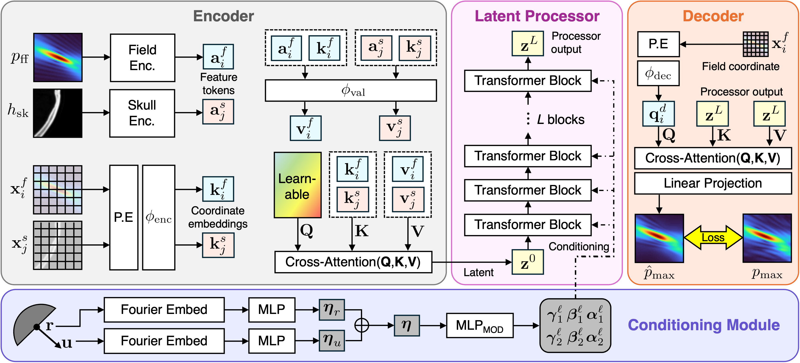
Building upon our previous work on multi-modal deep learning for transcranial focused ultrasound (tFUS) simulation, this research explores a more generalized framework for predicting intracranial acoustic pressure fields. While our earlier CNN- and Transformer-based surrogate models demonstrated the feasibility of real-time acoustic simulation, they primarily relied on learning direct mappings between input and output volumes.
To move beyond conventional image-to-image regression, we introduce tFUSOperator, a neural operator framework that formulates transcranial ultrasound simulation as a mapping between function spaces. Rather than treating acoustic fields simply as voxelized images, this approach aims to learn a more structured representation of acoustic propagation through heterogeneous skull anatomies.
Motivation
Conventional deep learning surrogates for tFUS simulation face several limitations. First, their predictions are typically tied to fixed spatial grids, making it difficult to generalize across different discretizations. Second, these models primarily learn statistical correlations between input and output images, without explicitly considering the spatial relationships involved in acoustic wave propagation. Furthermore, previous approaches have often been developed under restricted treatment conditions, such as a single operating frequency or transducer configuration.
To address these challenges, we sought to develop a coordinate-aware neural operator that represents acoustic and anatomical information within a shared physical coordinate system. By learning the relationship between spatially distributed inputs and the resulting acoustic field, the proposed framework aims to provide a more flexible and physically structured approach to tFUS simulation.
Methodology
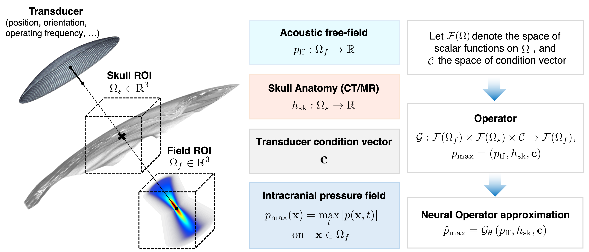
We formulated intracranial acoustic field prediction as an operator learning problem, where the network learns a mapping from the acoustic free-field, patient-specific skull anatomy, and treatment parameters to the resulting intracranial pressure field.
Unlike conventional voxel-based networks, tFUSOperator explicitly incorporates physical coordinates into its architecture, allowing the model to process different input modalities according to their spatial locations. The framework consists of four main components:
Multi-modal encoder: Separate encoding branches extract features from the acoustic free-field and skull images (CT/MR). Each feature is associated with its physical coordinates, enabling the network to integrate acoustic and anatomical information within a shared coordinate system. A coordinate-decoupled cross-attention mechanism further separates spatial attention from modality-specific feature information.
Conditioning module: Transducer position and orientation are encoded using Fourier feature embeddings and multilayer perceptrons. These parameters provide additional information about the treatment configuration and are incorporated into the network through adaptive modulation.
Latent processor: A Transformer-based processor operates on a fixed set of latent tokens, capturing interactions between the acoustic field, skull anatomy, and transducer configuration. This latent representation enables efficient processing of high-dimensional spatial information without directly applying attention to every voxel.
Coordinate-based decoder: The processed latent representation is decoded into the intracranial pressure field using spatial coordinates as queries. Rather than reconstructing the output through a conventional voxel-based decoder, the network predicts acoustic pressure values at the specified query locations.
To evaluate the proposed framework, we constructed a dataset using 13 human skull anatomies, with 300 transducer placements per skull and three operating frequencies (250, 400, and 500 kHz). Acoustic simulations were performed using the k-Wave toolbox to generate reference pressure fields. The dataset was divided into training, validation, and test sets at the skull level, allowing us to assess generalization to both unseen transducer placements on known skulls and entirely unseen skull anatomies.
Results
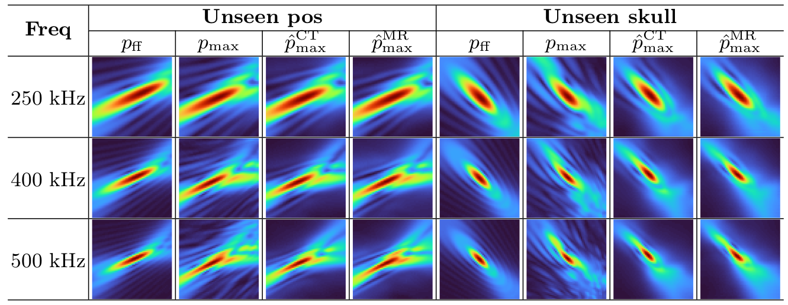
The proposed tFUSOperator demonstrated accurate intracranial acoustic field prediction across different skull anatomies and operating frequencies. For seen skulls with unseen transducer placements, the model achieved Dice scores of 90.50% using CT and 90.56% using MR images, with peak localization errors of approximately 1.3 mm. On entirely unseen skulls, the Dice scores were 72.41% and 71.54% for CT and MR, respectively, with peak localization errors of approximately 3 mm. Notably, the model maintained a peak pressure amplitude error below 2% across all evaluation settings, demonstrating its ability to estimate acoustic intensity even under previously unseen anatomical conditions.
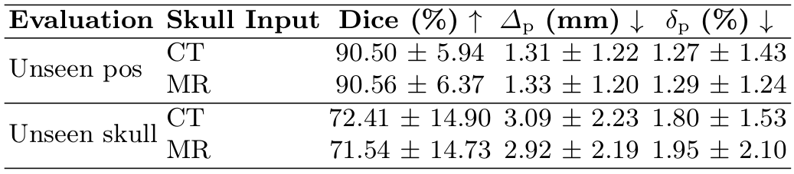
Another important finding was the comparable performance between CT- and MR-based predictions. Despite the limited visibility of skull structures in conventional MR images, the model achieved nearly identical accuracy with both modalities, further supporting the feasibility of radiation-free acoustic field estimation.
In terms of computational efficiency, tFUSOperator required only 2.16 milliseconds per prediction, compared to approximately 122 seconds for conventional k-Wave simulations, achieving a speedup of approximately 56,000 times.
Our ablation studies also demonstrated that incorporating skull anatomical information significantly improved prediction accuracy. Furthermore, the proposed coordinate-decoupled attention mechanism showed improved generalization to unseen skull anatomies compared to conventional feature-dependent cross-attention, suggesting the benefit of explicitly separating spatial relationships from anatomical feature representations.
Conclusion
This research introduces tFUSOperator, a coordinate-aware neural operator for real-time intracranial acoustic field prediction. By reformulating tFUS simulation as an operator learning problem, the proposed framework moves beyond conventional voxel-to-voxel regression toward a more structured representation of acoustic propagation.
The model demonstrates accurate and efficient predictions across multiple operating frequencies and patient-specific skull anatomies, while maintaining comparable performance with CT and MR inputs. These findings highlight the potential of operator learning as a computational foundation for patient-specific tFUS digital twins.
Personal reflections
Building upon my previous research, I initiated this project with the goal of developing a more fundamental and generalizable framework for transcranial focused ultrasound simulation. This has been one of the most exciting research projects I have worked on, and it remains an ongoing effort. (If there was one particularly difficult aspect of this research, it was the unbearable heat from the computers overheating during data generation and model training...)
In my view, one of the greatest advantages of neural operators over conventional voxel-to-voxel regression models is their potential for resolution-invariant inference. For example, a model can be trained using relatively coarse spatial grids to reduce memory consumption and computational costs, while still allowing predictions on finer grids without retraining. Although this capability was not evaluated in the paper, I confirmed through additional experiments that tFUSOperator can perform inference on higher-resolution grids than those used during training. This was particularly exciting to me, as it provided encouraging evidence that our model can function as a neural operator beyond fixed-grid regression. I am especially pleased that this work represents our first step toward extending deep learning-based acoustic simulation into the field of operator learning.
Another major objective of this research is to develop a unified model capable of handling diverse treatment conditions, including operating frequency, transducer aperture diameter, and radius of curvature (ROC). Compared to our previous model, which was trained under a single operating frequency, tFUSOperator takes an important step forward by supporting multiple frequencies within a single model.
Nevertheless, several challenges remain. In particular, generalization to unseen skull anatomies is still insufficient. Our experiments also revealed that prediction accuracy tends to decrease at higher operating frequencies, where the acoustic focal region becomes smaller and skull-induced aberrations become more pronounced, resulting in lower average Dice scores. Improving robustness under these challenging conditions is therefore an important direction for future research.
Furthermore, the current framework has not yet been extended to explicitly handle variations in transducer geometry, such as aperture diameter, radius of curvature, and focal length. Incorporating these parameters and evaluating generalization across diverse transducer configurations will be a central focus of our ongoing work.
Optimization of acoustic holographic lens for transcranial focused ultrasound using active learning-based genetic algorithm
Combining surrogate prediction, genetic optimization, and active learning for lens design.
Read article ↗
Introduction
Acoustic holography (AH) is a technique that enables precise manipulation of ultrasound propagation through a specially designed acoustic lens. By introducing spatially varying phase delays, an acoustic holographic lens can reshape the transmitted ultrasound field to produce a desired focal distribution.
In transcranial focused ultrasound (tFUS), acoustic holography offers a promising approach to compensating for skull-induced aberrations and achieving precise targeting of brain regions. Unlike conventional multi-element phased-array transducers, which require complex electronic phase control, holographic lenses can manipulate acoustic wavefronts using a single-element transducer, potentially reducing hardware complexity and cost.
Motivation
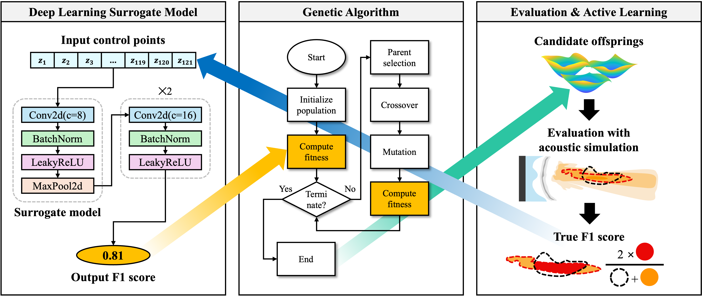
Conventional acoustic holographic lenses are typically designed using the time-reversal (TR) method, which reconstructs the required phase distribution by simulating ultrasound propagation backward from a target region toward the transducer. Although effective for focusing ultrasound at a specific location, this approach has limitations when the desired target has a complex three-dimensional geometry. Interference between waves originating from different points within the target volume can produce undesirable focal patterns, while the resulting lens design cannot be directly refined through further optimization.
An alternative is to formulate acoustic lens design as an inverse design optimization problem, where the lens geometry is iteratively adjusted to maximize the overlap between the resulting acoustic focal region and the desired target volume. However, evaluating each candidate lens requires computationally expensive numerical simulations, making conventional optimization methods impractical for exploring high-dimensional design spaces.
To overcome these limitations, we proposed a surrogate-assisted optimization framework that combines the rapid predictive capability of deep learning with the global search capability of genetic algorithms, while incorporating active learning to progressively improve the surrogate model.
Methodology
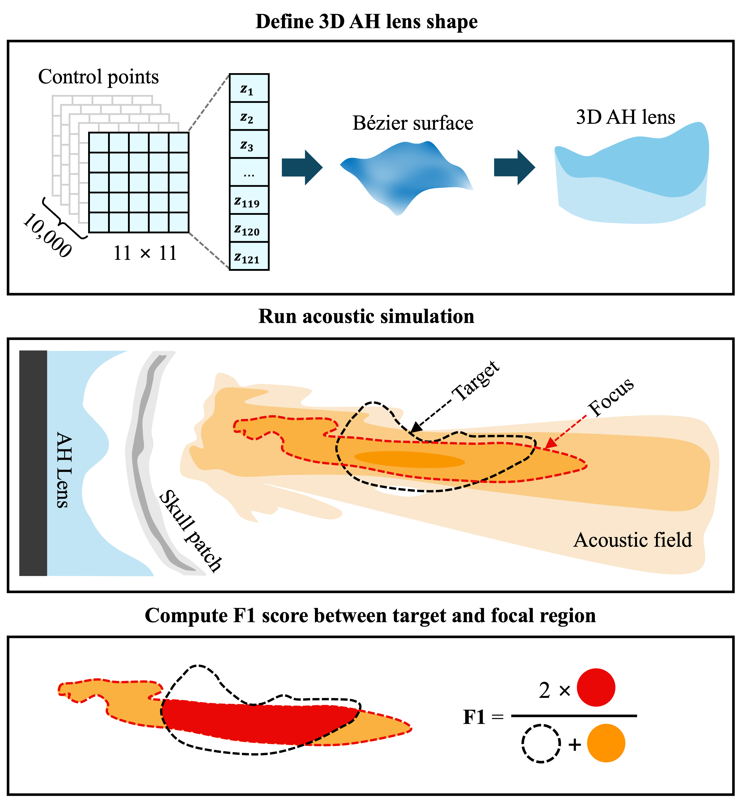
Our framework consists of four main components: Bézier-based lens parameterization, acoustic simulation, CNN-based surrogate modeling, and active learning-guided genetic optimization.
Lens parameterization: We represented the acoustic holographic lens using a 10th-degree Bézier surface defined by 11 × 11 control points. The height of each control point serves as an independent design variable, resulting in a 121-dimensional continuous optimization problem. This representation enables smooth and flexible lens geometries while maintaining a manageable number of parameters.
Acoustic simulation: For each candidate lens, the resulting acoustic pressure field was computed using the k-Wave numerical simulation toolbox, accounting for wave propagation through the lens and patient-specific skull structures. The generated focal region was compared with the desired target volume using the F1 score, which measures their volumetric overlap.
CNN-based surrogate model: We developed a convolutional neural network to approximate the relationship between lens geometry and acoustic focusing performance. The network receives the 11 × 11 array of Bézier control-point heights and directly predicts the corresponding F1 score, enabling rapid evaluation of candidate designs without performing full numerical simulations.
Genetic algorithm with active learning: A genetic algorithm (GA) was employed to explore the lens design space through crossover and mutation operations. Instead of simulating every generated candidate, the CNN surrogate pre-screens the population and selects promising designs for numerical evaluation. The newly simulated samples are then incorporated into the training dataset to update the surrogate model, forming an iterative active learning loop.
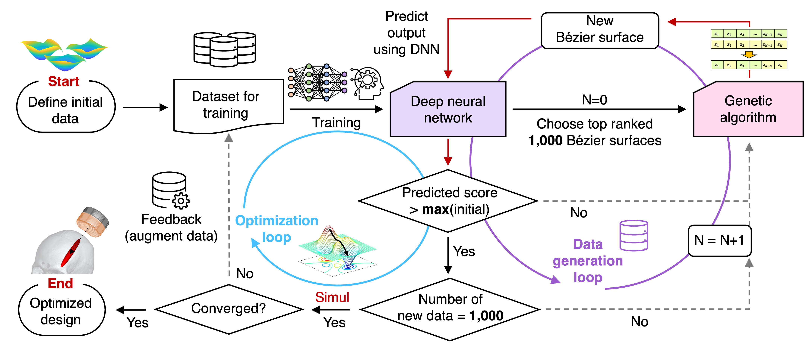
We initialized the optimization with 10,000 randomly generated lens geometries and performed seven generations of genetic optimization, adding 1,000 simulation-verified samples per generation. Through this process, the surrogate model progressively learned to predict performance more accurately in high-performing regions of the design space.
The proposed framework was evaluated using three human skull models and four target geometries: two synthetic targets (an aberration-corrected focus and an elliptical focus) and two anatomically realistic deep brain structures (the thalamus and putamen).
Personal reflections
This research was conducted in collaboration with the CMMD Lab at Ewha Womans University. Our lab primarily led the problem formulation, acoustic simulations, and further analyses, while the CMMD Lab focused on developing the deep learning surrogate model, implementing active learning, and constructing the optimization framework.
Throughout this collaboration, I became more aware of my own shortcomings as a researcher. In particular, I made several mistakes during the initial stages of data generation and transfer, which taught me the importance of carefully validating every step of the research process. Although these experiences were challenging, they encouraged me to become more meticulous and responsible in my work.
Another fascinating aspect of this project was the opportunity to explore acoustic holography, which naturally led me to study optical holography and Diffractive Deep Neural Networks (D2NNs). I was particularly intrigued by the idea of using physical wave propagation itself to perform neural network computations, rather than relying entirely on conventional digital hardware.
The possibility of implementing neural networks directly in physical systems with potentially much lower energy consumption is especially exciting to me. As the computational and energy demands of modern AI continue to grow, I wonder whether such physics-based computing paradigms could offer a promising direction for addressing some of the fundamental challenges facing today's AI industry.
2026 · Vision Language Models · LLM Council · Clinical reasoning
SMILE: A Structured Multi-Agent Clinical Reasoning for Liver Ultrasound Understanding
Multi-agent framework for interpreting liver ultrasound images.
Read article ↗
This paper was a collaborative effort with Haris, a brilliant colleague from our lab. Although I have relied heavily on LLMs throughout my research, I had never had the opportunity to work directly with language models myself. It was a great experience to develop Haris's creative ideas together and explore a research area that was relatively new to me.
One of the biggest challenges was learning how difficult VLM fine-tuning can be in practice. I still remember how frustrating it was when our model, after LoRA fine-tuning, kept repeating the same phrases like a parrot. I honestly felt like crying! Nevertheless, after considerable trial and error, we eventually achieved promising results, which made the experience even more rewarding.
Beyond the technical aspects, this project also helped me significantly improve my communication and collaboration skills. Working closely with my colleague taught me how to exchange ideas, discuss technical challenges, and solve problems together more effectively. (As a bonus, my English improved a lot along the way.)
YEAR · TOPIC
Project title
One-sentence project description.
Read article ↗
Overview
Research question and motivation.
My contribution
Describe your own role.
Approach
Method and optional figures.
Results
Verified findings and limitations.
Resources
Paper, code, or presentation links.
Contact
Advanced Science and Technology Center (ASTC) 616, Yonsei University, South Korea
You can reach me via email at islandz@yonsei.ac.kr.